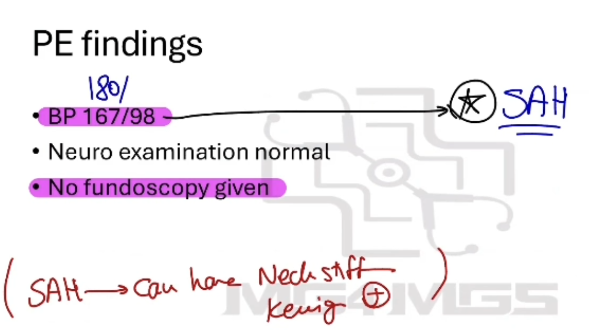

Subarachnoid Haemorrhage - History, Diagnosis and Differential
Source: Dr. Amir workshop — Med workshop 2 - 2026 / CLASS 1 HEADACHE (Aug 2026 drop) · Specialty: neurology
Differential for a Very Severe Headache
A 52-year-old with a very severe headache. Priority differentials: subarachnoid haemorrhage (thunderclap headache, the most severe), meningitis (if acute), and temporal arteritis (given age >50).
Opening, Concern and Analgesia
Request haemodynamic stability (examiner defers vitals to the PE task). Introduce yourself and use an open-ended question. The patient reports a headache since this morning (very acute) that is far worse than his usual migraines and feels different. Approach acute and chronic headaches the same way, since a known migraineur can still present with SAH or meningitis. Respond to the concern. The role-player typically expresses a painful gesture (holding the head: "the worst headache of my life") — an acute non-verbal cue; offer analgesia (arrange it via the nurse) and continue.
Pain Characteristics (SIQORAA)
- Site: started in the back of the head (occipital), now all over the head and neck.
- Intensity: 9/10.
- Quality: dull, vague ache.
- Onset: this morning; first-ever headache of this severity ("worst headache ever"); constant and worsening.
- Radiation: none.
- Alleviating/aggravating: painkillers not helping.
Sudden-onset, severe, progressive, first-ever headache unrelieved by analgesia carries multiple red flags. Neck stiffness and Kernig sign are positive. If CT is negative, proceed to lumbar puncture.
Differential-Directed Questions
SAH: "Is this the worst headache of your life?" and "Did it start suddenly?"; clarify whether it began occipitally and spread. Brain tumour: worse on coughing/sneezing; neurological deficit (weakness, numbness, blurred vision, speech, gait); weight loss, lumps, personal/family cancer history. Temporal arteritis: tender temporal cord, visual change, jaw claudication, shoulder/hip pain. Meningitis: fever, chills, rash, nausea/vomiting, photophobia (asked early as the case resembles meningitis). ICH: falls, head trauma, blood thinners. Plus migraine, cervicogenic (sore neck), cluster (watery eyes, runny nose), glaucoma (red eye), tension and infection.
Findings and Blood Pressure Interpretation
Findings: worst headache of life; sudden onset at the occiput spreading generally; painkillers ineffective; nothing else positive. On the PE card: BP 167/98, normal neurological examination, fundoscopy not given; neck stiffness and Kernig sign positive.
Blood pressure: the diagnosis remains SAH, not a hypertensive headache — severe pain is most likely driving the BP up, and 167/98 is below the hypertensive urgency/emergency threshold (which begins around 180). When handed a PE card, read it quickly (about 20 seconds) within the 2-minute window and move to the diagnosis.
Diagnosis and Differential Explanation
Diagnosis: "My main concern is subarachnoid haemorrhage — bleeding between the brain and its covering." Reasons: very sudden onset, worst-ever severity that is different from his usual migraine, and pain that began at the back of the head and spread. Signal seriousness without straying beyond the stated task ("This is serious and will need treatment, but my task today is to give the diagnosis and differential").
Differentials: brain tumour/SOL (no weight loss, no weakness/numbness); meningitis/encephalitis (no fever); temporal arteritis (no shoulder ache or scalp tenderness); plus ICH, hypertensive headache, cluster, migraine and tension headache. Keep the list specific.
Case Figures





🔬 Expert Review & Enhancements
Reviewed by: history-taking-expert (Australian clinical supervisor) · fact-checked against the irStudy medical textbook RAG index.
✏️ Corrections
SAH is classically a sudden-onset, maximal-at-onset ('thunderclap') severe headache, often described as the worst ever and sometimes 'like being hit on the back of the head'. While quality can vary, the discriminating features to stress are the abrupt onset reaching peak intensity within seconds-to-minutes and the difference from usual headaches - these, not the descriptor 'dull', drive the diagnosis.
⭐ Suggested Enhancements
🏷️ Metadata
📚 Reference Citations (RAG)
John Murtagh General Practice, 8th Edition.pdf p.80 (p229) qdrant:c4c0c7c3-11ce-41ad-b015-a13ca14f48ba
John Murtagh General Practice, 8th Edition.pdf p.199 (p496) qdrant:e806bdd2-53a2-407b-8099-1c0dac3e6204
Churchills_Pocketbook_of_Differential_Diagnosis (1).pdf p.123 (p136) qdrant:deb1d62e-9e5b-4d71-8602-b1541919658e